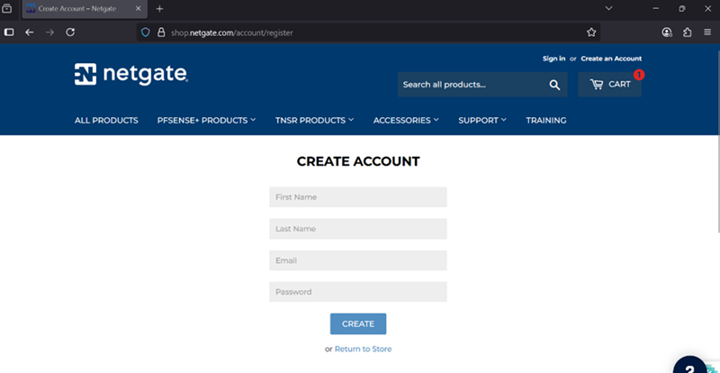
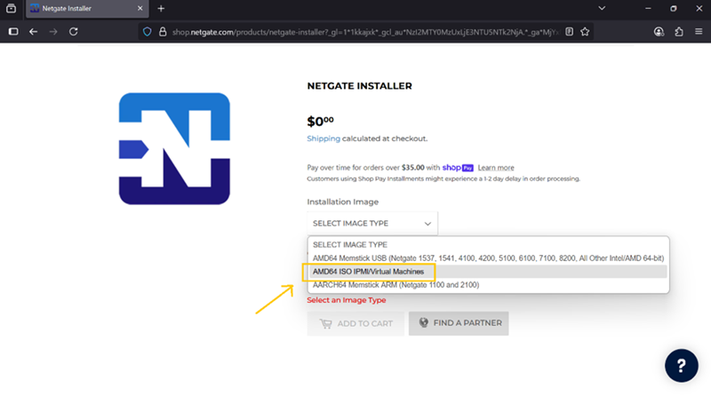
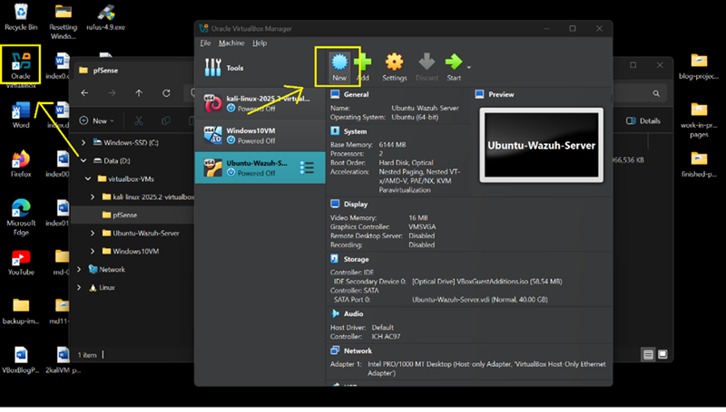
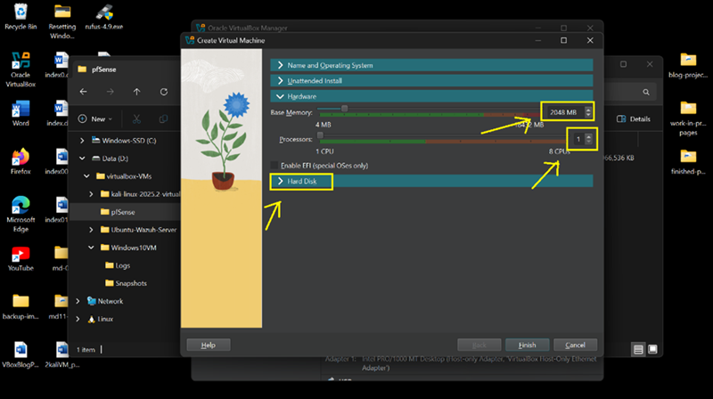
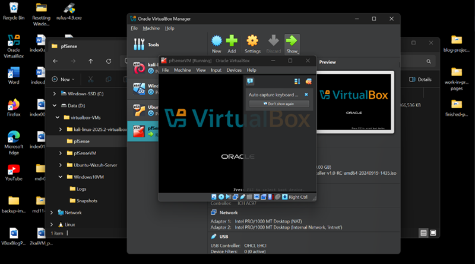

Overview
pfSense acts as the central firewall and routing layer in this lab, enabling segmentation between attacker, endpoint, and SIEM systems.
Key Concepts
- WAN: External network interface
- LAN: Internal lab network
- NIC: Virtual network adapter
- NAT: Network address translation
- ISO: Installation image
Requirements
- VirtualBox installed
- pfSense ISO downloaded
- Hardware virtualization enabled
- 2 GB RAM minimum
- 20 GB disk space
Step 1 — Download ISO
- Go to pfSense Download Page
- Select AMD64 installer
- Download ISO file

Step 2 — Prepare ISO
- Move ISO to lab storage directory
- Verify file integrity

Step 3 — Create VM
- Open VirtualBox → New
- Name: pfSenseVM
- Type: FreeBSD (64-bit)
- Attach ISO

Step 4 — Allocate Resources
- RAM: 2048 MB
- CPU: 1 core
- Disk: 20 GB

Step 5 — Installation
- Boot VM
- Accept defaults
- Install to disk
- Wait for completion

Install Complete
pfSense is now installed and ready to function as the core firewall layer.